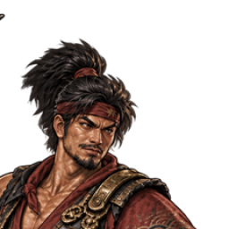
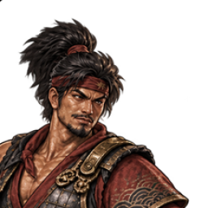
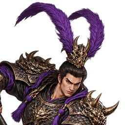
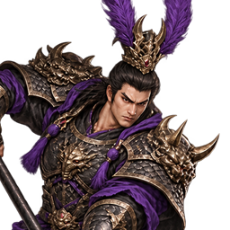
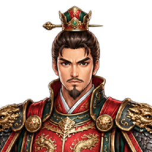
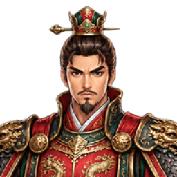

{"x":170,"y":18,"w":224,"h":224}
估算眼線 40.0%｜髮頂與高束髮可保留；小幅下移裁框以對齊眼線
{"x":176,"y":-7,"w":180,"h":180}
估算眼線 39.9%｜冠飾完整；上移裁框以將眼線下移至參考比例


{"x":142,"y":0,"w":256,"h":256}
估算眼線 62.5%｜保留雙長羽冠的推薦候選；比例例外。標準眼線版本需 y≈57，會截斷羽冠，不推薦

對齊版 y=57，會裁掉長羽冠，不推薦

{"x":156,"y":0,"w":200,"h":200}
估算眼線 44.1%｜保留髮髻頂部；眼線略低於參考，但下移裁框約8px會切到髮髻


{"x":156,"y":1,"w":200,"h":200}
估算眼線 39.7%｜冠飾保持完整；微調1px即可對齊參考眼線
{"x":154,"y":9,"w":224,"h":224}
估算眼線 40.1%｜保留束髮飾物；小幅下移裁框以對齊眼線